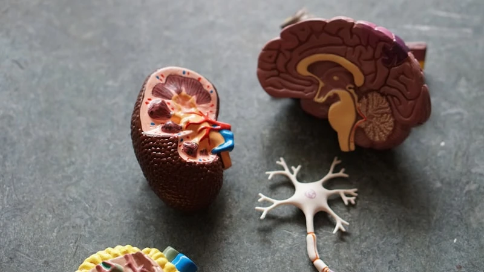
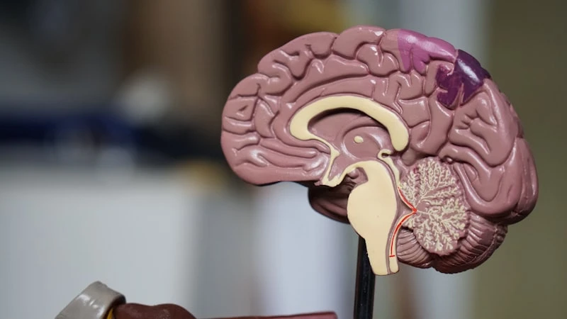
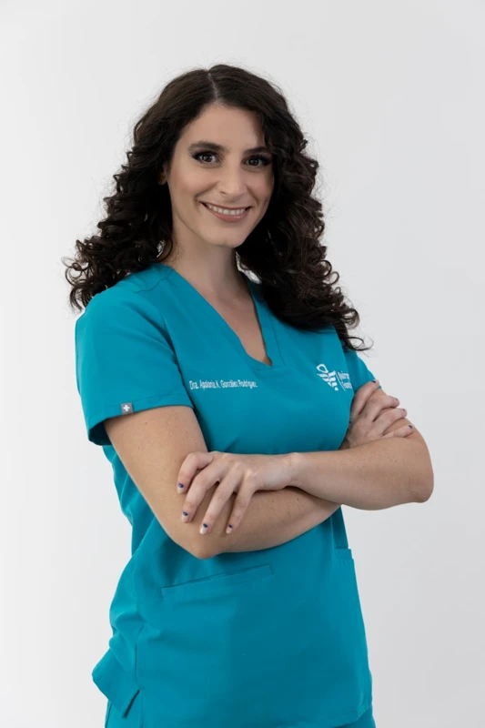
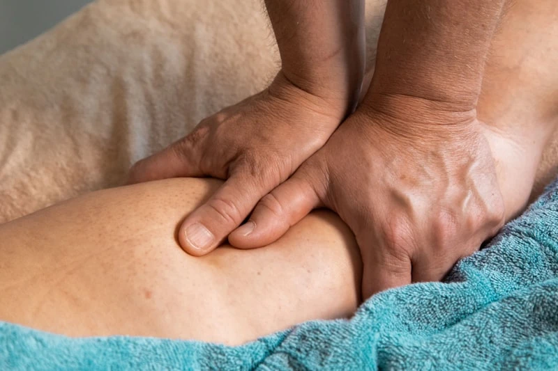
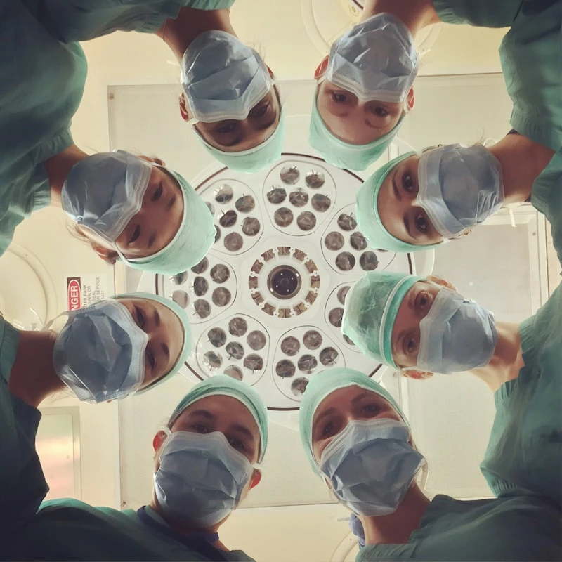
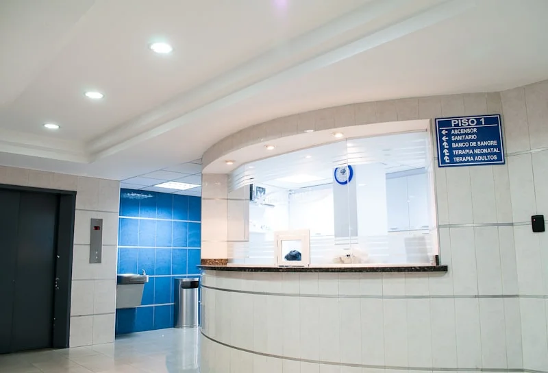

Advanced care for heart diseases, including angioplasty, bypass surgery, and comprehensive cardiac diagnostics.
Book Appointment
Expert treatment for brain, spinal cord, and nervous system disorders using the latest medical innovations.
Book AppointmentSpecialized care for bones, joints, and muscles, including joint replacements and sports medicine.
Book AppointmentCompassionate care for infants, children, and adolescents to ensure a healthy future.
Book Appointment
Comprehensive women's healthcare, from maternity care to minimally invasive gynecologic surgery.
Book Appointment
Advanced treatments for skin, hair, and nail conditions by expert dermatologists.
Book AppointmentPrimary care and comprehensive management of adult diseases and chronic conditions.
Book Appointment
State-of-the-art imaging services including MRI, CT scans, X-Rays, and Ultrasounds.
Book Appointment
24/7 dedicated emergency care with rapid response teams and critical care units.
Book AppointmentWe invest in the latest medical advancements to provide unparalleled precision in diagnosis and treatment.
High-resolution imaging providing exceptional anatomical detail for neurological and musculoskeletal conditions.
Minimally invasive surgical procedures offering faster recovery times and extreme precision.
AI-assisted laboratory diagnostics ensuring rapid and error-free test results for early detection.
From the moment you arrive to your full recovery, we ensure a seamless and comfortable experience.
Immediate evaluation upon arrival to route you to the appropriate specialist based on urgency.
Meet with our expert doctors for a thorough physical examination and medical history review.
Rapid on-site laboratory testing and imaging to accurately pinpoint the medical issue.
Personalized treatment plan execution, followed by comprehensive post-care monitoring.
Common questions about visiting our specialized departments.